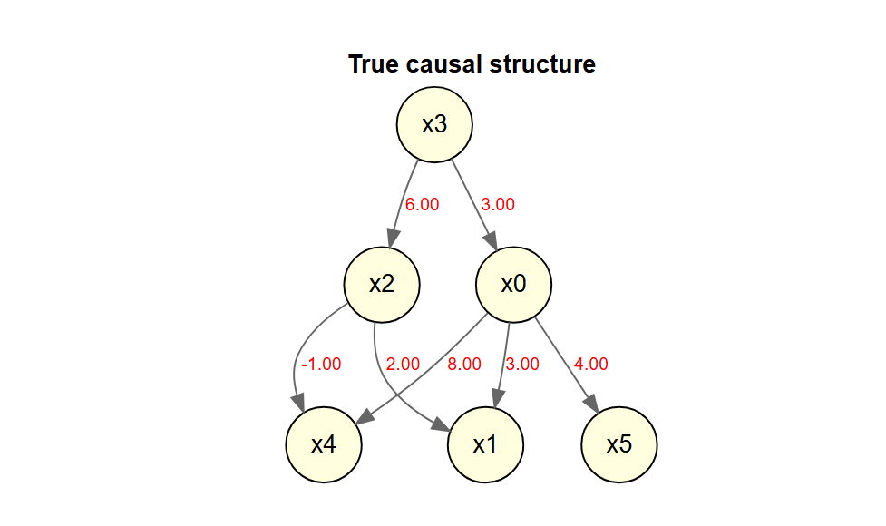
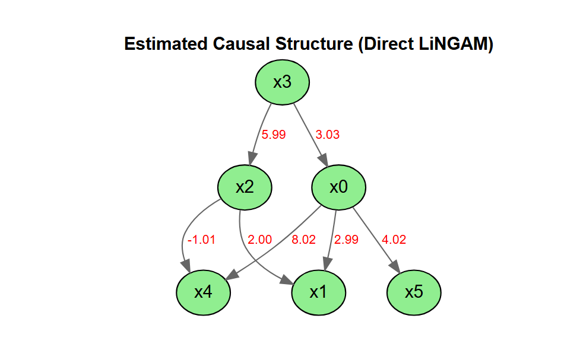
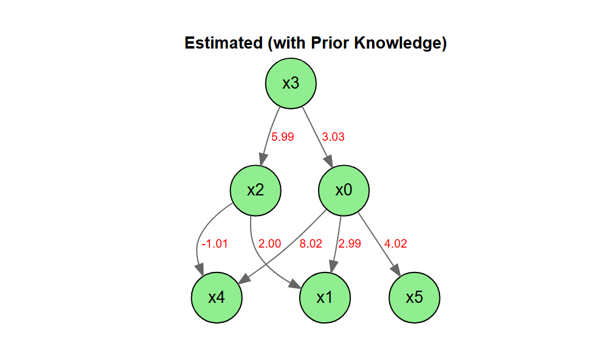
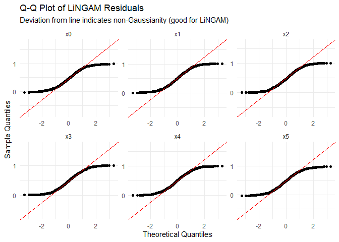
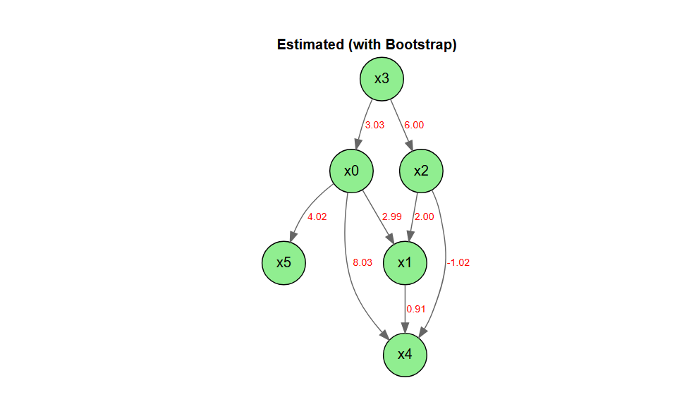
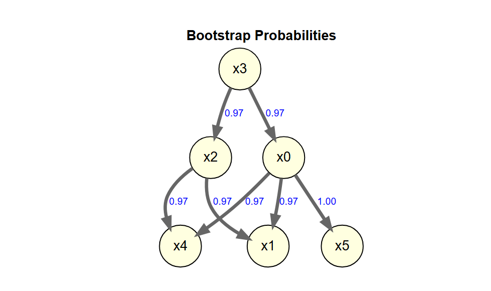
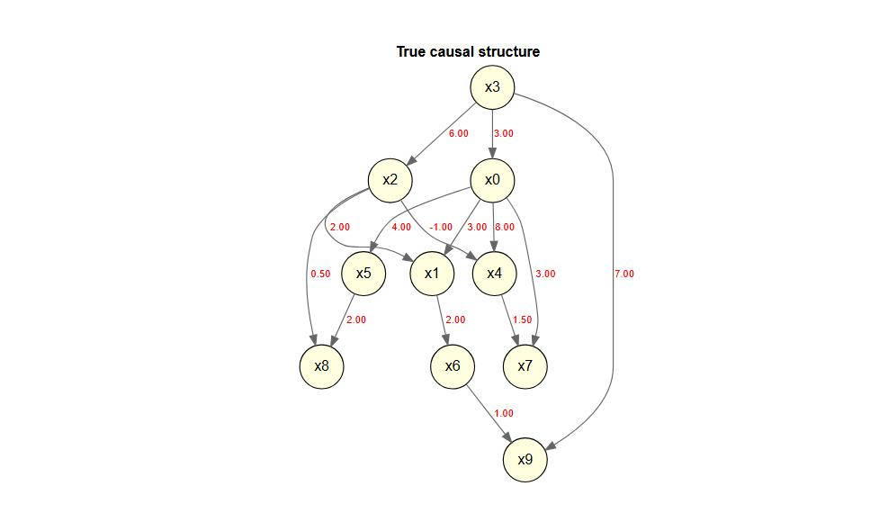

LiNGAM is a new method for estimating structural equation models or linear Bayesian networks. It is based on using the non-Gaussianity of the data.
This package is a port of the Python lingam package to R.
lingamr is a port to R of the LiNGAM package (LiNGAM: Linear Non-Gaussian Acyclic Model), which is available in Python.
This is currently an alpha version under development, and we are releasing it for the purpose of testing and gathering feedback.
Features
- Implementation of the Direct LiNGAM algorithm
- Stability assessment of causal structures using the bootstrap method
- Visualization of estimation results using DiagrammeR
Important Notes
- This package does not include all the features of the Python version.
- This package also includes features that are not present in the Python version.
Installation
You can install the development version of DirectLiNGAM from GitHub with:
# install.packages("pak")
pak::pak("morimotoosamu/lingamr")Usage
Sample Data
x1k <- generate_lingam_sample_6(n = 1000)
x1k$true_adjacency |>
plot_adjacency_diagrammer(
labels = colnames(x1k$data),
title = "True causal structure",
rankdir = "TB",
shape = "circle"
)
Causal Discovery
独立性の評価はデフォルトでは相互情報量(mutual infomation)を用います。
パス係数の算出には適応的LASSO回帰が使われます。
model <- x1k$data |>
direct_lingam()Causal Order
推定された因果の順序を確認します。
# index number
model$causal_order
#> [1] 4 3 1 5 6 2
# variable name
colnames(x1k$data)[model$causal_order]
#> [1] "x3" "x2" "x0" "x4" "x5" "x1"Estimated Adjacency Matrix
推定された効果の量を確認します。
model$adjacency_matrix |>
round(3)
#> x0 x1 x2 x3 x4 x5
#> x0 0.000 0 0.000 3.033 0 0
#> x1 2.988 0 2.002 0.000 0 0
#> x2 0.000 0 0.000 5.993 0 0
#> x3 0.000 0 0.000 0.000 0 0
#> x4 8.017 0 -1.009 0.000 0 0
#> x5 4.015 0 0.000 0.000 0 0Plot The Estimated Causal Graph
推定された隣接行列に基づいて、因果グラフを描きます。
model$adjacency_matrix |>
plot_adjacency_diagrammer(
labels = colnames(model$adjacency_matrix),
title = "Estimated Causal Structure (Direct LiNGAM)",
rankdir = "TB",
shape = "ellipse",
fillcolor = "lightgreen"
)
Calculating The Total Causal Effect
推定されたすべての総合効果を算出します。
x1k$data |>
estimate_all_total_effects(model) |>
round(3)
#> x0 x1 x2 x3 x4 x5
#> x0 0.000 0 0.000 3.033 0.000 0.000
#> x1 2.909 0 1.889 21.059 0.000 0.155
#> x2 0.000 0 0.000 5.993 0.000 0.000
#> x3 0.000 0 0.000 0.000 0.000 0.000
#> x4 8.001 0 -1.309 18.276 0.000 0.000
#> x5 4.014 0 0.000 12.179 0.003 0.000Inference Based On Prior Knowledge
事前知識を用いた実行例です。
Specify In The Index
- 変数の数は6個
- x3 is an exogenous variable.
- x1, x4, and x5 are sink_variables.
- x0 to x2 are no path.
pk1 <- make_prior_knowledge(
n_variables = 6,
exogenous_variables = 4,
sink_variables = c(2, 5, 6),
no_paths = list(c(3, 1), c(1, 3))
)
pk1
#> [,1] [,2] [,3] [,4] [,5] [,6]
#> [1,] -1 0 0 -1 0 0
#> [2,] -1 -1 -1 -1 0 0
#> [3,] 0 0 -1 -1 0 0
#> [4,] 0 0 0 -1 0 0
#> [5,] -1 0 -1 -1 -1 0
#> [6,] -1 0 -1 -1 0 -1Direct LiNGAM を実行する際に、引数 prior_knowledge に事前知識を指定します。
model_pk1 <- x1k$data |>
direct_lingam(prior_knowledge = pk1, lambda = "BIC")
cat("Causal Order: ", colnames(x1k$data)[model_pk1$causal_order], "\n")
#> Causal Order: x3 x2 x0 x4 x5 x1結果の隣接行列に基づいて因果グラフを描きます。
model_pk1$adjacency_matrix |>
round(3)
#> x0 x1 x2 x3 x4 x5
#> x0 0.000 0 0.000 3.033 0 0
#> x1 2.988 0 2.002 0.000 0 0
#> x2 0.000 0 0.000 5.993 0 0
#> x3 0.000 0 0.000 0.000 0 0
#> x4 8.017 0 -1.009 0.000 0 0
#> x5 4.015 0 0.000 0.000 0 0
model_pk1$adjacency_matrix |>
plot_adjacency_diagrammer(
labels = colnames(model_pk1$adjacency_matrix),
title = "Estimated (with Prior Knowledge)",
rankdir = "TB",
shape = "circle",
fillcolor = "lightgreen"
)
Independence between error variables
LiNGAMでは残差が独立であることを仮定している。
get_error_independence_p_values関数は残差間の独立性の検定のp値を返す。
Calculation of the p-value (default: Spearman)
result <- x1k$data |>
direct_lingam()
p_vals <- x1k$data |>
get_error_independence_p_values(result)
round(p_vals, 3)
#> x0 x1 x2 x3 x4 x5
#> x0 NA 0.988 0.214 0.976 0.484 0.954
#> x1 0.988 NA 0.986 0.991 0.323 0.882
#> x2 0.214 0.986 NA 0.919 0.100 0.124
#> x3 0.976 0.991 0.919 NA 0.806 0.974
#> x4 0.484 0.323 0.100 0.806 NA 0.643
#> x5 0.954 0.882 0.124 0.974 0.643 NA正規性の検定
残差の正規性の検定を行う
# Shapiro-Wilk (default)
x1k$data |>
test_residual_normality(result)
#> === Residual Normality Test ===
#> Method: shapiro
#> Sample size: 1000
#> Significance: 0.050
#> Non-Gaussian: 6 / 6 variables
#>
#> variable statistic p_value is_non_gauss skewness kurtosis
#> x0 0.9516 < 2.2e-16 TRUE 0.061 -1.215
#> x1 0.9521 < 2.2e-16 TRUE 0.026 -1.213
#> x2 0.9557 < 2.2e-16 TRUE 0.083 -1.170
#> x3 0.9578 2.25e-16 TRUE 0.025 -1.163
#> x4 0.9546 < 2.2e-16 TRUE -0.003 -1.205
#> x5 0.9536 < 2.2e-16 TRUE -0.052 -1.206
#>
#> Interpretation:
#> is_non_gauss = TRUE -> rejects normality (supports LiNGAM assumption)
#> is_non_gauss = FALSE -> cannot reject normality (LiNGAM may not fit)
#>
#> All residuals are non-Gaussian. LiNGAM assumption is supported.QQプロットでも残差の正規性を確認する
x1k$data |>
plot_residual_qq(result)
Bootstrap Direct LiNGAM
bs_model <- x1k$data |>
bootstrap_lingam(n_sampling = 30L, seed = 42)
#> Bootstrap: 30 iterations, method=adaptive_lasso
#> iteration 1 / 30
#> iteration 10 / 30
#> iteration 20 / 30
#> iteration 30 / 30
#> Completed in 7.2 seconds.
bs_model
#> BootstrapResult: 30 samplings, 6 features係数
bs_model |>
get_causal_direction_counts(labels = names(x1k$data))
#> from to count proportion mean_effect median_effect sd_effect ci_lower
#> 1 1 6 30 1.00000000 4.02010918 4.01886128 0.009510235 4.00298581
#> 2 1 2 29 0.96666667 2.98872289 2.98691378 0.029595289 2.94808621
#> 3 1 5 29 0.96666667 8.02805949 8.03049041 0.030493711 7.97909377
#> 4 3 2 29 0.96666667 2.00133847 2.00270222 0.015820048 1.97089548
#> 5 3 5 29 0.96666667 -1.01545079 -1.01650518 0.015564566 -1.03972182
#> 6 4 1 29 0.96666667 3.03159775 3.03291869 0.035791478 2.96698487
#> 7 4 3 29 0.96666667 6.00046795 6.00363746 0.031652501 5.94254816
#> 8 2 1 1 0.03333333 0.05299398 0.05299398 0.000000000 0.05299398
#> 9 2 3 1 0.03333333 0.40422428 0.40422428 0.000000000 0.40422428
#> 10 2 5 1 0.03333333 0.90679690 0.90679690 0.000000000 0.90679690
#> 11 3 4 1 0.03333333 0.16165370 0.16165370 0.000000000 0.16165370
#> 12 5 1 1 0.03333333 0.10459193 0.10459193 0.000000000 0.10459193
#> 13 5 3 1 0.03333333 -0.13879324 -0.13879324 0.000000000 -0.13879324
#> ci_upper from_name to_name
#> 1 4.03756004 x0 x5
#> 2 3.04468103 x0 x1
#> 3 8.08567538 x0 x4
#> 4 2.02581141 x2 x1
#> 5 -0.98775234 x2 x4
#> 6 3.09090167 x3 x0
#> 7 6.05479799 x3 x2
#> 8 0.05299398 x1 x0
#> 9 0.40422428 x1 x2
#> 10 0.90679690 x1 x4
#> 11 0.16165370 x2 x3
#> 12 0.10459193 x4 x0
#> 13 -0.13879324 x4 x2平均因果効果の隣接行列
bs_adjacency_matrix <- bs_model |>
get_adjacency_matrix_summary(stat = "median")
bs_adjacency_matrix |>
round(3)
#> [,1] [,2] [,3] [,4] [,5] [,6]
#> [1,] 0.000 0.053 0.000 3.033 0.105 0
#> [2,] 2.987 0.000 2.003 0.000 0.000 0
#> [3,] 0.000 0.404 0.000 6.004 -0.139 0
#> [4,] 0.000 0.000 0.162 0.000 0.000 0
#> [5,] 8.030 0.907 -1.017 0.000 0.000 0
#> [6,] 4.019 0.000 0.000 0.000 0.000 0係数の可視化（係数0.5以上のパスを描画）
bs_adjacency_matrix |>
plot_adjacency_diagrammer(
threshold = 0.5,
labels = colnames(x1k$data),
title = "Estimated (with Bootstrap)",
rankdir = "TB",
shape = "circle",
fillcolor = "lightgreen"
)
ブートストラップ確率の行列
bs_model |>
get_probabilities()
#> [,1] [,2] [,3] [,4] [,5] [,6]
#> [1,] 0.0000000 0.03333333 0.00000000 0.9666667 0.03333333 0
#> [2,] 0.9666667 0.00000000 0.96666667 0.0000000 0.00000000 0
#> [3,] 0.0000000 0.03333333 0.00000000 0.9666667 0.03333333 0
#> [4,] 0.0000000 0.00000000 0.03333333 0.0000000 0.00000000 0
#> [5,] 0.9666667 0.03333333 0.96666667 0.0000000 0.00000000 0
#> [6,] 1.0000000 0.00000000 0.00000000 0.0000000 0.00000000 0平均総合効果
bs_model |>
get_total_causal_effects()
#> from to effect probability
#> 1 1 6 4.01907390 1.00000000
#> 2 1 2 2.93210481 0.96666667
#> 3 1 5 8.00575712 0.96666667
#> 4 3 2 1.94023398 0.96666667
#> 5 3 5 -1.18014784 0.96666667
#> 6 4 1 3.03291869 0.96666667
#> 7 4 2 21.05796205 0.96666667
#> 8 4 3 6.00363746 0.96666667
#> 9 4 5 18.27768167 0.96666667
#> 10 4 6 12.18492785 0.96666667
#> 11 6 2 0.19623886 0.06666667
#> 12 2 1 0.14794503 0.03333333
#> 13 2 3 0.27850920 0.03333333
#> 14 2 4 0.04611007 0.03333333
#> 15 2 5 0.90679690 0.03333333
#> 16 2 6 0.59359217 0.03333333
#> 17 3 4 0.16191585 0.03333333
#> 18 3 6 -0.35827083 0.03333333
#> 19 5 1 0.10506715 0.03333333
#> 20 5 3 -0.13869103 0.03333333
#> 21 5 6 0.41846402 0.03333333bootstrapの結果を因果グラフに
デフォルトでは50%以上出現しているパスを表示
bs_model |>
plot_bootstrap_probabilities()
sample data 10変数
大きめのデータセット。10変数、1万行。
x10k <- generate_lingam_sample_10(n = 10000)
x10k$true_adjacency |>
plot_adjacency_diagrammer(
labels = colnames(x10k$data),
title = "True causal structure",
rankdir = "TB",
shape = "circle"
)
Licence
MIT License
Original work: Copyright (c) 2019 T.Ikeuchi, G.Haraoka, M.Ide, W.Kurebayashi, S.Shimizu
Portions of this work: Copyright (c) 2026 O.Morimoto
References
Algorithm
- Shimizu, S. et al. (2011). DirectLiNGAM: A direct method for learning a linear non-Gaussian structural equation model. Journal of Machine Learning Research, 12, 1225-1248. ### Original Implementation (Python)
- Ikeuchi, T. et al. (2023). Python package for LiNGAM algorithms. Journal of Machine Learning Research, 24(14), 1-7.
https://github.com/cdt15/lingam ### Books - 清水昌平(2017)『統計的因果探索』講談社.
- 梅津佑太・西村龍映・上田勇祐(2020)『スパース回帰分析とパターン認識』講談社.
- 鈴木譲(2025)『グラフィカルモデルと因果探索100問 with R』共立出版. ### R Packages Referenced
- G. Kikuchi (2020). rlingam https://github.com/gkikuchi/rlingam